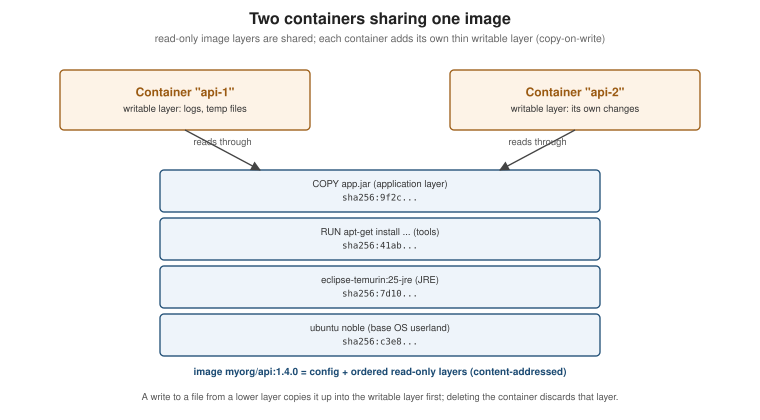

Images, Layers and Tags
|
This content was generated with the assistance of AI and should be verified against the official documentation before being relied on in production. |
Everything Docker does starts from an image, and most surprises — an image that "changed" without a rebuild, a
cache that never hits, a docker pull that downloads a different architecture than expected — come from
misunderstanding what an image and its name actually are. This page explains the image model and the commands that
manage images, as implemented by Docker Engine 29.8.x and the OCI image specification.
Images and containers
The two 2015 books in the bibliography draw the distinction the same way, and it still holds: an image is a read-only template; a container is a running (or stopped) instance of it with its own writable layer, process and configuration. One image can back any number of containers.
Concretely, an image is:
-
an ordered list of layers — each a tar archive of filesystem changes (files added, changed or deleted), produced by one filesystem-changing build step such as
RUN,COPYorADD; -
an image configuration — JSON holding the default command (
Entrypoint,Cmd), environment, working directory, user, exposed ports, labels, the target platform and the build history; -
a manifest tying the two together by digest.
Every piece is addressed by the SHA-256 digest of its content. Two images that share a base share those layers on disk and in the registry, and a layer that already exists locally is never downloaded again.

When a container starts, the storage driver or snapshotter stacks the image’s layers into one read-only view and adds a thin writable layer on top. Reading a file finds it in the topmost layer that contains it. Writing to a file that lives in a lower layer first copies it up into the writable layer (copy-on-write); deleting it records a "whiteout". The writable layer disappears with the container, which is why persistent data belongs in volumes (see Storage: Volumes, Bind Mounts and tmpfs). Derived from Understanding the image layers and What is an image?.
docker run -d --name c1 nginx:1.29
docker exec c1 sh -c 'echo changed > /usr/share/nginx/html/index.html'
docker container diff c1 # C = changed, A = added, D = deleted -- only the writable layer
docker rm -f c1 # the change is gone with the containerDerived from docker container diff.
Image references: registry, namespace, repository, tag, digest
A full image reference is:
[registry[:port]/][namespace/]repository[:tag][@sha256:digest]
| Part | Example | Default when omitted |
|---|---|---|
Registry |
|
|
Namespace |
|
|
Repository |
|
— (required) |
Tag |
|
|
Digest |
|
none |
So nginx means docker.io/library/nginx:latest, and ghcr.io/myorg/orders-service:1.4.0 is fully explicit.
Tags versus digests, and why latest is a trap
A tag is a mutable pointer: the publisher can move nginx:1.29 to a new build tomorrow (to ship a security fix,
for example), and latest is nothing more than the tag used when none is given — it does not mean "newest" and
is not updated automatically. A digest is immutable: nginx@sha256:… always resolves to exactly the same bytes,
and pulling by digest verifies them.
-
Use specific version tags (
eclipse-temurin:25-jre,postgres:18.1) inFROMlines andcompose.yamlso builds are understandable, and pin by digest (FROM eclipse-temurin:25-jre@sha256:…) where reproducibility matters more than automatically receiving patches. -
Never deploy
latest: two nodes pulling at different times can run different code under the same name, and a rollback to "the previous `latest`" is impossible. -
Docker Hub and other registries offer immutable tags that cannot be overwritten once pushed (see Registries and Docker Hub).
docker pull nginx:1.29
docker image inspect --format '{{index .RepoDigests 0}}' nginx:1.29 # nginx@sha256:...
docker pull nginx@sha256:<digest-from-above> # always the same contentDerived from Pull an image by digest.
Manifests, manifest lists and multi-platform images
A single name such as eclipse-temurin:25-jre works on an x86-64 laptop, an Apple-silicon Mac and an ARM server
because it points to an image index (called a manifest list in Docker’s original format): a small document
listing one manifest per platform. The client picks the entry that matches its platform, then fetches that
manifest’s configuration and layers.
sha256:aa11..."] idx -->|linux/amd64| m1["Manifest amd64
sha256:bb22..."] idx -->|linux/arm64| m2["Manifest arm64
sha256:cc33..."] idx -.->|attestation manifest| att["SBOM and provenance"] m2 --> cfg["Config JSON
entrypoint, env, user, history"] m2 --> l1["Layer 1 blob"] m2 --> l2["Layer 2 blob"] m2 --> l3["Layer 3 blob"]
docker buildx imagetools inspect eclipse-temurin:25-jre # the index and every platform in it
docker pull --platform linux/amd64 eclipse-temurin:25-jre # a specific platform (runs emulated on arm64)
docker image inspect --format '{{.Os}}/{{.Architecture}}' eclipse-temurin:25-jreDerived from Multi-platform builds and
docker buildx imagetools inspect.
Building such images is covered in BuildKit and Buildx. With the
containerd image store (the default on fresh Engine 29 installs) the local store keeps the whole index, including
attestations; the classic store keeps only the pulled platform.
Managing images
docker pull postgres:18.1 # download (layers already present are skipped)
docker image ls # Engine 29: a collapsed tree view, one row per image with its platforms
docker image ls --tree # expand every platform variant and its size
docker image ls --all # include untagged (dangling) images, hidden by default since 29
docker image ls --filter reference='postgres:*' --format '{{.Repository}}:{{.Tag}} {{.Size}}'
docker image inspect postgres:18.1 # full configuration JSON
docker image history postgres:18.1 # one row per build step and the layer it produced
docker tag postgres:18.1 registry.example.com/db/postgres:18.1 # a second name for the same image ID
docker image rm registry.example.com/db/postgres:18.1 # removes the name; data goes with the last name
docker image prune # remove dangling images
docker image prune --all --filter until=168h # remove all unused images created more than a week agoDerived from docker image (and its ls, inspect,
history, tag, rm and prune sub-pages) and the Engine 29
release notes for the new image ls view.
docker image history is the quickest way to see why an image is large: each row shows the instruction that
produced a layer and its size. Build steps that only change metadata (ENV, LABEL, CMD) appear with 0B.
Moving images without a registry: save and load
docker image save -o orders-1.4.0.tar myorg/orders-service:1.4.0 # layers + config + tags, as a tarball
scp orders-1.4.0.tar airgapped-host:
ssh airgapped-host docker image load -i orders-1.4.0.tarDerived from docker image save and
docker image load. This is the documented way to move
images into air-gapped environments; it preserves every layer and the history.
export/import and commit — and why not
-
docker container exportflattens a container’s filesystem into a single tar and discards the history, configuration and layer sharing;docker image importturns it back into a one-layer image. Useful for forensics, not for shipping software. -
docker container commitsnapshots a container’s writable layer into a new image. Learning Docker (chapter 2) uses it to create images interactively. The result is an image nobody can rebuild: there is no Dockerfile recording how it was made. Write a Dockerfile instead (see Dockerfile Fundamentals); keepcommitfor capturing a broken container’s state for later debugging.
Derived from docker container commit and
docker container export.
Labels and annotations
Labels are key-value metadata stored in the image configuration (set with LABEL in a Dockerfile or --label
at build time) and are visible to anything that inspects the image or its containers. Use the pre-defined
org.opencontainers.image.* keys — source, revision, version, created, licenses, title — so tooling
such as GHCR and Docker Scout can link an image back to its repository and commit.
Annotations are OCI metadata attached to manifests and indexes rather than to the image configuration. Registries
read them without downloading the config (GHCR shows org.opencontainers.image.description from an annotation, for
example), and they can differ per platform manifest.
# Labels live in the image config and survive a local load
docker build --label org.opencontainers.image.source=https://github.com/myorg/orders-service \
-t myorg/orders-service:1.4.0 .
docker image inspect --format '{{json .Config.Labels}}' myorg/orders-service:1.4.0
# Annotations live on manifests/indexes: the local image store cannot load them, so push directly
docker build --push --annotation "org.opencontainers.image.description=Orders service" \
-t registry.example.com/myorg/orders-service:1.4.0 .
docker buildx imagetools inspect --raw registry.example.com/myorg/orders-service:1.4.0Derived from Annotations (which notes that the Docker Engine
image store does not support loading images with annotations) and the
OCI pre-defined annotation keys.
docker/metadata-action generates both from Git metadata in CI (see
Docker CI/CD with GitHub Actions).